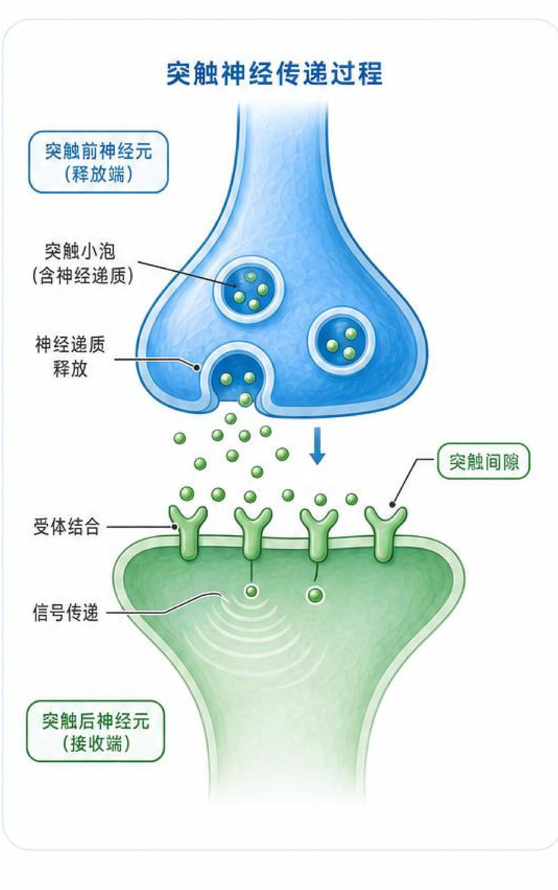

三、儿茶酚胺与交感神经系统
神经递质水平与应激反应分析
指标结果
- 去甲肾上腺素0.51 nmol/L卧位参考：0.41-4.43 nmol/L
- 肾上腺素0.07 nmol/L卧位参考：≤ 0.61 nmol/L
- 3-甲氧基去甲肾上腺素0.46 nmol/L参考：< 0.90 nmol/L
- 3-甲氧基酪胺< 0.06 nmol/L参考：0.00-0.11 nmol/L
- 3-甲氧基肾上腺素0.11 nmol/L参考：< 0.50 nmol/L
- 高香草酸（HVA）116.80 nmol/L参考：< 182 nmol/L
- 香草扁桃酸（VMA）96.38 nmol/L参考：< 101 nmol/L
- 多巴胺< 0.07 nmol/L参考：< 0.20 nmol/L
突触神经传递过程

结果解读
所有儿茶酚胺及其代谢产物均在正常范围内，且部分指标处于正常范围的低端，提示孙楠楠女士的急性压力应激水平较低，交感神经系统功能稳定。